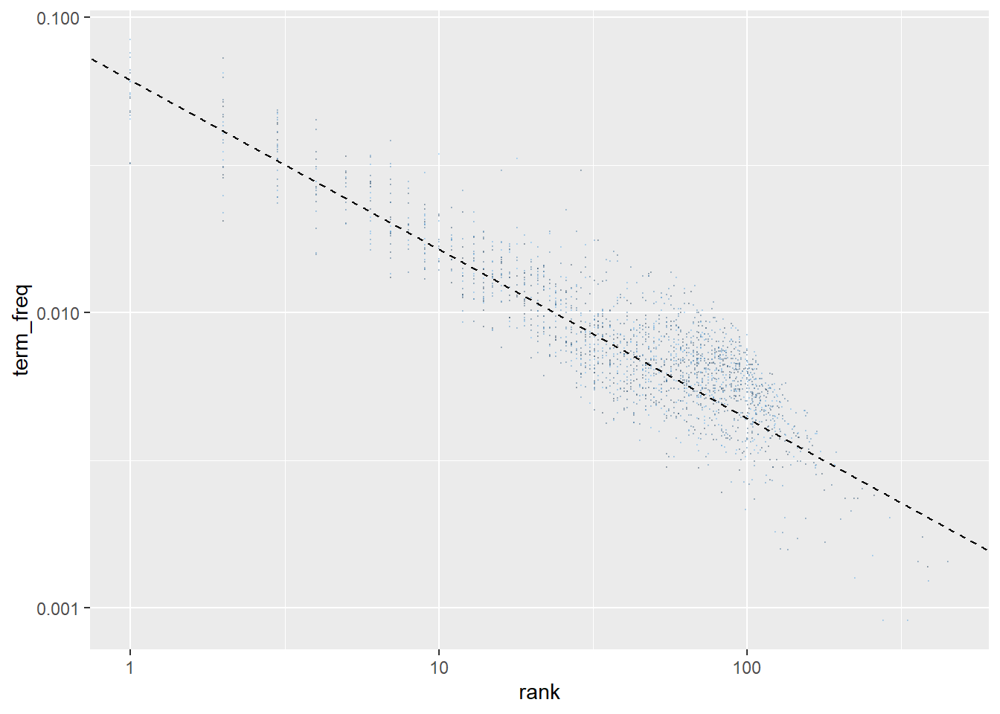
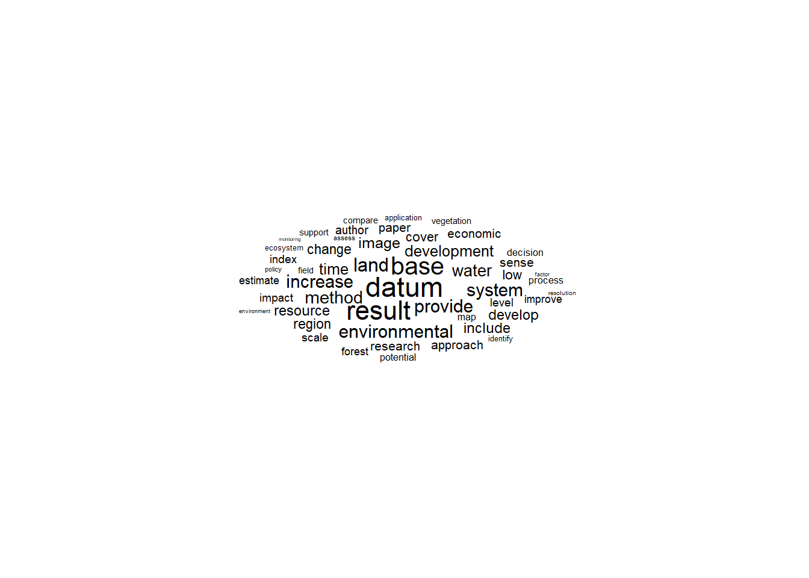
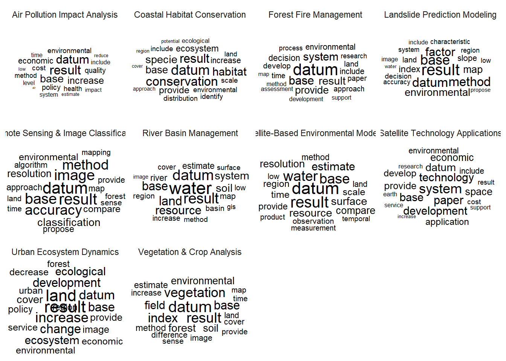

Code
library(tidyverse)
library(here)
library(tidytext)
source(here('common_fxns.R'))library(tidyverse)
library(here)
library(tidytext)
source(here('common_fxns.R'))Here we will iterate topic-by-topic to identify, using the TF-IDF concept, words and bigrams that are particularly important for a small number of articles, as well as those that come up frequently across all articles in the topic.
Load the results of the LDA on topics.
topic_labels <- read_csv(here('_data/chatgpt/topic_labels_k10.csv'))
topic_df <- read_csv(here('_output/lda_topic_k10.csv')) %>%
left_join(topic_labels, by = 'topic')
top_prob_df <- topic_df %>%
group_by(doc_id) %>%
filter(prob == max(prob)) %>%
ungroup()This will function on the lemmatized abstracts created in the LDA script.
Across all abstracts in the results set, identify most commonly used words (whether keywords or search terms or otherwise), using a \(tf-idf\) (term frequency x inverse doc frequency) approach, where \[tf_{\text{word}} = \frac{n_{\text{word}}} {n_{\text{all words}}}\] and \[idf = \ln \left(\frac{n_{\text{abstracts}}}{n_{\text{abstracts containing term}}}\right)\] or in other words, \[idf = - \ln \left(\frac{n_{\text{abstracts containing terms}}}{n_{\text{abstracts}}}\right)\]
The product \(tf \times idf\) indicates words that are relatively important to one abstract (based on frequency of the term within that abstract) within the overall collection of abstracts (based on how infrequently the term shows up in other abstracts). Terms that show up in all abstracts (e.g., stop words) will have an \(idf \rightarrow 0\) equal to or near 0, as the ratio \(\rightarrow 1\).
lemma_dict_f <- here('_data/abstract_lemmatized.csv')
if(!file.exists(lemma_dict_f)) {
stop('Lemmatized abstract file does not exist - run the LDA script to create it!')
}
abstr_lemmatized_df <- read_csv(lemma_dict_f) %>%
rename(text = abstr_lemma)
abstr_words <- abstr_lemmatized_df %>%
unnest_tokens(input = text, output = word, token = 'words') %>%
anti_join(stop_words, by = 'word') %>%
group_by(doc_id, word) %>%
summarize(n = n(), .groups = 'drop') %>%
group_by(doc_id) %>%
mutate(term_freq = n / sum(n)) %>%
ungroup()abstr_freq_by_rank <- abstr_words %>%
group_by(doc_id) %>%
arrange(desc(term_freq)) %>%
mutate(rank = 1:n()) %>%
ungroup() %>%
anti_join(stop_words, by = c('word')) %>%
filter(nchar(word) > 2)
rank_subset <- abstr_freq_by_rank %>%
filter(rank < 50)
freq_rank_lm <- lm(log10(term_freq) ~ log10(rank), data = rank_subset)
# Coefficients:
# (Intercept) log10(rank)
# -1.1059 -0.7098
ggplot(abstr_freq_by_rank %>% sample_n(2000),
aes(x = rank, y = term_freq, color = doc_id)) +
geom_point(alpha = .3, size = .1, show.legend = FALSE) +
geom_abline(intercept = freq_rank_lm$coefficients[1],
slope = freq_rank_lm$coefficients[2],
linetype = 'dashed') +
scale_x_log10() +
scale_y_log10()
Zipf’s law: Frequency of a word is inversely proportional to rank… log-log plot shows a (basically) constant slope of -0.572 for terms ranked less than 50.
abstr_idf <- abstr_words %>%
mutate(n_abstr = n_distinct(doc_id)) %>%
group_by(word) %>%
summarize(n_abstr_w_term = n_distinct(doc_id),
n_abstr = first(n_abstr), .groups = 'drop') %>%
mutate(idf = -log(n_abstr_w_term / n_abstr))
abstr_tf_idf <- abstr_words %>%
left_join(abstr_idf, by = c('word')) %>%
mutate(tf_idf = term_freq * idf) %>%
arrange(desc(tf_idf))
top_tf_idf_all_docs <- abstr_tf_idf %>%
slice_max(tf_idf, n = 50) %>%
mutate(across(.cols = c(term_freq, idf, tf_idf), .fns = ~round(.x, 4))) %>%
select(doc_id, word, term_freq, idf, tf_idf)
DT::datatable(top_tf_idf_all_docs)Visualize terms to find themes - exclude terms from the ESI and value terms. Also remove common but uninformative terms like “study”, “based”, and “management” that show up frequently.
exclude_terms <- c('value', 'benefit', 'satellite',
'remote', 'sensing', 'spatial',
'study', 'analysis', 'results',
'based', 'management', 'model',
'data', 'information') %>%
paste0(collapse = '|')
wordcloud_df <- abstr_idf %>%
anti_join(stop_words, by = c('word')) %>%
filter(!str_detect(word, exclude_terms)) %>%
filter(nchar(word) > 2) %>%
filter(!str_detect(word, '[0-9]')) %>%
mutate(doc_freq = n_abstr_w_term / n_abstr) %>%
slice_max(order_by = doc_freq, n = 50)
ggplot(wordcloud_df, aes(label = word, size = doc_freq)) +
ggwordcloud::geom_text_wordcloud() +
theme_minimal()
Repeat the above analysis, except here grouping by topic to identify common words that show up in each topic.
abstr_topic_df <- abstr_lemmatized_df %>%
left_join(top_prob_df, by = c('doc_id'))
abstr_topic_words <- abstr_topic_df %>%
unnest_tokens(input = text, output = word, token = 'words') %>%
group_by(doc_id, topic, label, word) %>%
summarize(n = n(), .groups = 'drop') %>%
group_by(doc_id, topic) %>%
mutate(term_freq = n / sum(n)) %>%
ungroup()abstr_topic_idf <- abstr_topic_words %>%
group_by(topic) %>%
mutate(n_abstr = n_distinct(doc_id)) %>%
group_by(topic, label, word) %>%
summarize(n_abstr_w_term = n_distinct(doc_id),
n_abstr = first(n_abstr), .groups = 'drop') %>%
mutate(idf = -log(n_abstr_w_term / n_abstr))
abstr_topic_tf_idf <- abstr_topic_words %>%
left_join(abstr_topic_idf, by = c('topic', 'label', 'word')) %>%
mutate(tf_idf = term_freq * idf) %>%
arrange(desc(tf_idf))
top_tf_idf_by_topic <- abstr_topic_tf_idf %>%
group_by(topic) %>%
slice_max(tf_idf, n = 10) %>%
mutate(across(.cols = c(term_freq, idf, tf_idf), .fns = ~round(.x, 4))) %>%
select(doc_id, topic, label, word, term_freq, idf, tf_idf)
DT::datatable(top_tf_idf_by_topic)knitr::kable(top_tf_idf_by_topic %>% janitor::get_dupes(word))| word | dupe_count | doc_id | topic | label | term_freq | idf | tf_idf |
|---|---|---|---|---|---|---|---|
| epc | 2 | 3057 | topic 8 | Remote Sensing & Image Classification | 0.1014 | 6.3682 | 0.6460 |
| epc | 2 | 6181 | topic 8 | Remote Sensing & Image Classification | 0.0818 | 6.3682 | 0.5207 |
wordcloud_topic_df <- abstr_topic_idf %>%
anti_join(stop_words, by = c('word')) %>%
filter(!str_detect(word, exclude_terms)) %>%
filter(nchar(word) > 2) %>%
filter(!str_detect(word, '[0-9]')) %>%
mutate(doc_freq = n_abstr_w_term / n_abstr) %>%
group_by(topic, label) %>%
slice_max(order_by = doc_freq, n = 20)
ggplot(wordcloud_topic_df, aes(label = word, size = doc_freq)) +
ggwordcloud::geom_text_wordcloud() +
theme_minimal() +
facet_wrap( ~ label)
Similar to above, except here, let’s break the abstracts into bigrams and focus on those that include one of the “value” search terms.
abstr_bigrams_all <- abstr_topic_df %>%
### first divide sentences so bigrams don't continue over sentence breaks
mutate(text = str_split(text, pattern = '[.;]')) %>%
unnest(text) %>%
### now break into bigrams
unnest_tokens(input = text, output = bigram, token = 'ngrams', n = 2) %>%
group_by(doc_id, topic, label, bigram) %>%
summarize(n = n(), .groups = 'drop') %>%
group_by(doc_id, topic) %>%
mutate(bigram_freq = n / sum(n)) %>%
group_by(topic) %>%
mutate(n_bigrams = n()) %>%
ungroup()
value_terms <- 'value|valuation|benefit|utility'
value_bigrams <- abstr_bigrams_all %>%
### filter to keep those bigrams with an instance of a value term
filter(str_detect(bigram, value_terms)) %>%
### separate out for dropping stop words
separate(col = bigram, into = c('word1', 'word2'), sep = ' ') %>%
### drop rows where the initial or final word is a stop word
anti_join(stop_words, by = c('word1' = 'word')) %>%
anti_join(stop_words, by = c('word2' = 'word')) %>%
### drop rows where any term is less than three characters long
# filter(nchar(word1) > 2 & nchar(word2) > 2) %>%
### reunite the bigram
unite(col = 'bigram', word1, word2, sep = ' ')value_bigram_idf <- value_bigrams %>%
group_by(topic) %>%
mutate(n_abstr = n_distinct(doc_id)) %>%
group_by(topic, bigram) %>%
summarize(n_abstr_w_term = n_distinct(doc_id),
n_abstr = first(n_abstr), .groups = 'drop') %>%
mutate(idf = -log(n_abstr_w_term / n_abstr))
value_bigram_tf_idf <- value_bigrams %>%
left_join(value_bigram_idf, by = c('topic', 'bigram')) %>%
mutate(tf_idf = bigram_freq * idf) %>%
arrange(desc(tf_idf))
top_tf_idf_by_topic <- value_bigram_tf_idf %>%
group_by(topic) %>%
slice_max(tf_idf, n = 5) %>%
mutate(across(.cols = c(bigram_freq, idf, tf_idf), .fns = ~round(.x, 4))) %>%
select(doc_id, topic, label, bigram, bigram_freq, idf, tf_idf)
DT::datatable(top_tf_idf_by_topic)Similar to above, except here, let’s break the abstracts into _tri_grams and focus on those that include one of the “value” search terms.
abstr_trigrams_all <- abstr_topic_df %>%
### first divide sentences so trigrams don't continue over sentence breaks
mutate(text = str_split(text, pattern = '[.;]')) %>%
unnest(text) %>%
### now break into trigrams
unnest_tokens(input = text, output = trigram, token = 'ngrams', n = 3) %>%
group_by(doc_id, topic, label, trigram) %>%
summarize(n = n(), .groups = 'drop') %>%
group_by(doc_id, topic) %>%
mutate(trigram_freq = n / sum(n)) %>%
group_by(topic) %>%
mutate(n_trigrams = n()) %>%
ungroup()
value_terms <- 'value|valuation|benefit|utility'
value_trigrams <- abstr_trigrams_all %>%
### filter to keep those trigrams with an instance of a value term
filter(str_detect(trigram, value_terms)) %>%
### separate out for dropping stop words
separate(col = trigram, into = c('word1', 'word2', 'word3'), sep = ' ') %>%
### drop rows where the initial or final word is a stop word
anti_join(stop_words, by = c('word1' = 'word')) %>%
anti_join(stop_words, by = c('word3' = 'word')) %>%
### drop rows where any term is less than three characters long
# filter(nchar(word1) > 2 & nchar(word2) > 2) %>%
### reunite the trigram
unite(col = 'trigram', word1, word2, word3, sep = ' ')value_trigram_idf <- value_trigrams %>%
group_by(topic) %>%
mutate(n_abstr = n_distinct(doc_id)) %>%
group_by(topic, trigram) %>%
summarize(n_abstr_w_term = n_distinct(doc_id),
n_abstr = first(n_abstr), .groups = 'drop') %>%
mutate(idf = -log(n_abstr_w_term / n_abstr))
value_trigram_tf_idf <- value_trigrams %>%
left_join(value_trigram_idf, by = c('topic', 'trigram')) %>%
mutate(tf_idf = trigram_freq * idf) %>%
arrange(desc(tf_idf))
top_tf_idf_by_topic <- value_trigram_tf_idf %>%
group_by(topic) %>%
slice_max(tf_idf, n = 5) %>%
mutate(across(.cols = c(trigram_freq, idf, tf_idf), .fns = ~round(.x, 4))) %>%
select(doc_id, topic, trigram, trigram_freq, idf, tf_idf)
DT::datatable(top_tf_idf_by_topic)